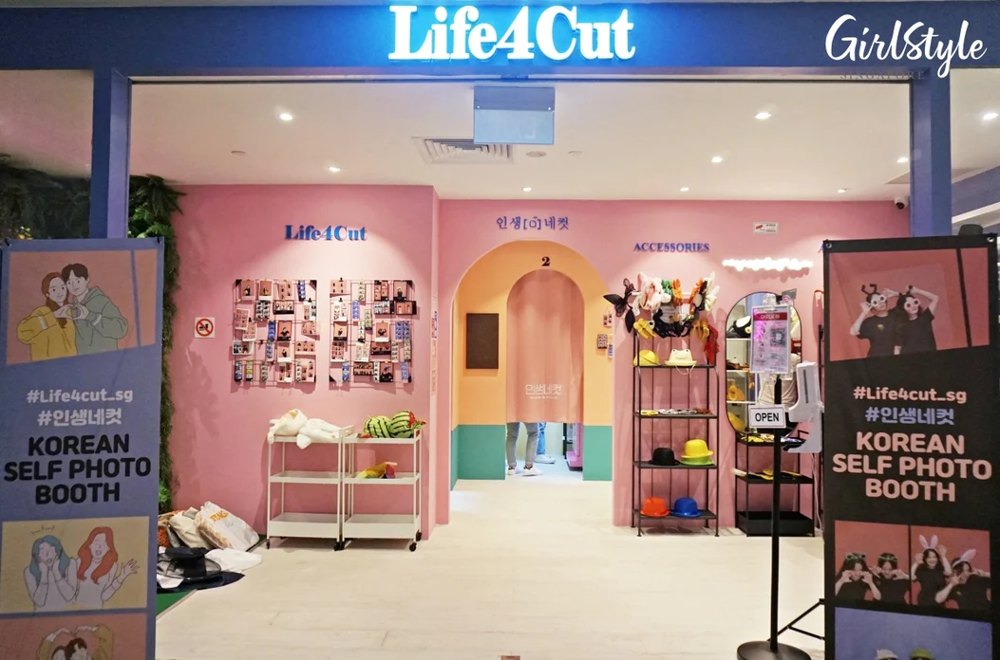
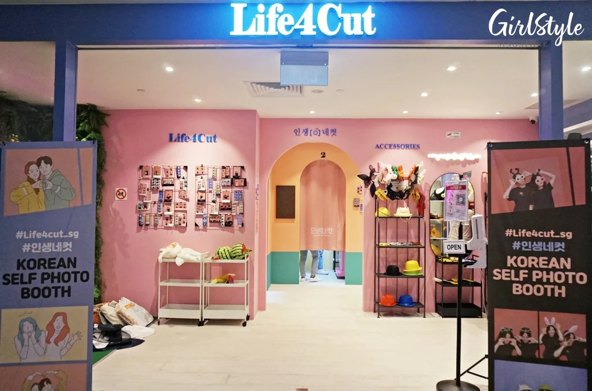
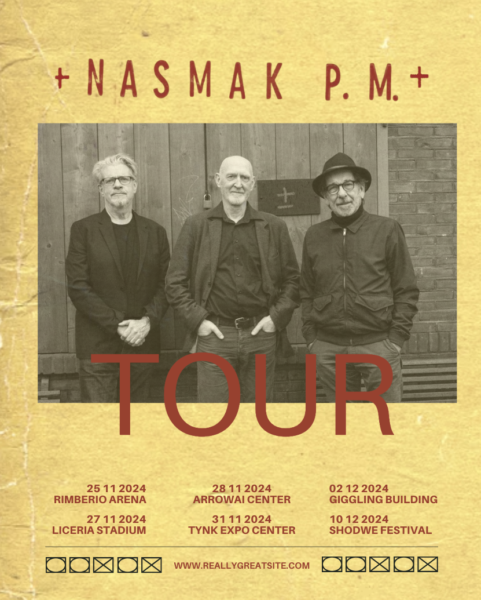
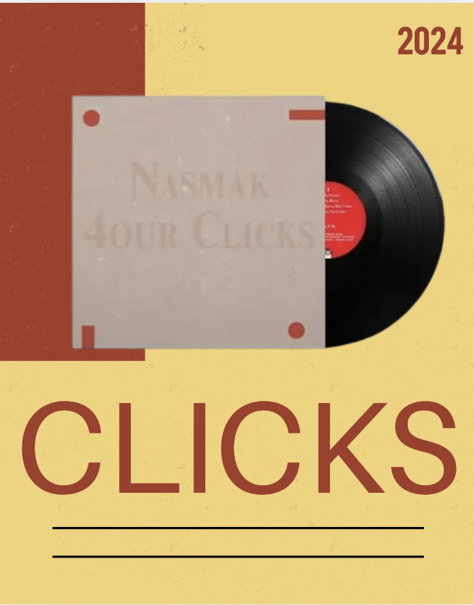
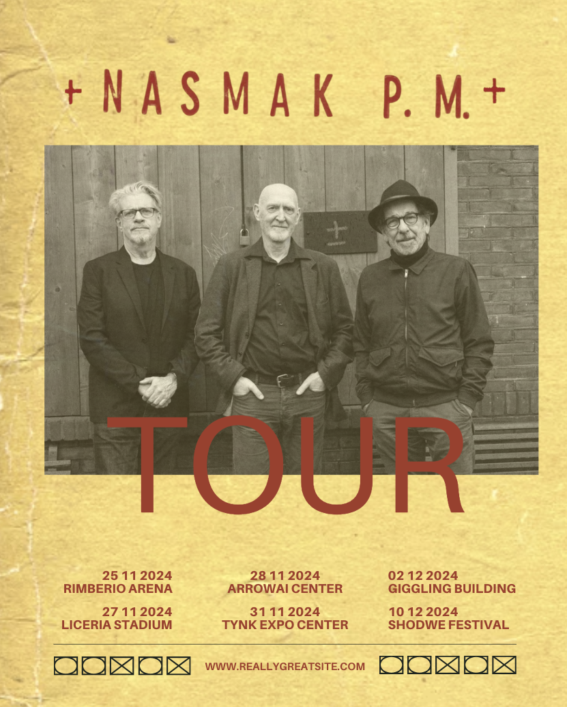
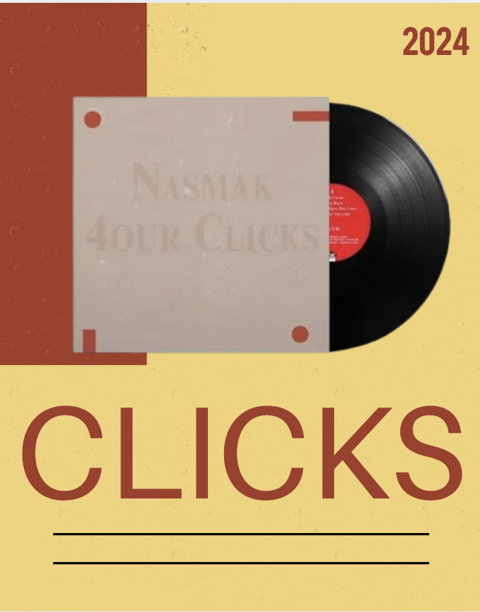

Moodboard
First, I looked online to understand what a new wave punk band's aesthetic is like. I explored their website and Instagram page to see the colors they typically use and the themes of their lyrics. I wanted to get a sense of what they sing about most often. After that, I went to TikTok to observe how fans of this type of music express themselves—how they dress, how their rooms are decorated, and what they like. I noticed that their style is heavily influenced by vintage items, with lots of bright colors and unique, unusual choices. Their rooms are filled with posters, concert tickets, lights, pictures, and drawings—often featuring a colorful or old-paper look. For my mood board, I included an egg and chicken, symbolizing the origins of the band's songwriting process. I also added an image of a girl with green hair, as many fans I saw have brightly colored hair. Overall, I found that the aesthetic is chaotic and vibrant, rather than clean and simple. When I showed my teacher my posters, he mentioned that he prefers a more polished, one-color style and showed me examples of his work, which are very professional and well put together. However, I believe that professionalism doesn't always mean clean and orderly. For a new wave punk band, the goal is to capture the raw, expressive energy of their style. If I were working with this band, I would want to create posters that reflect my own interpretation of their aesthetic, embracing the chaotic and bold vibe that defines their look and sound.


 



 


